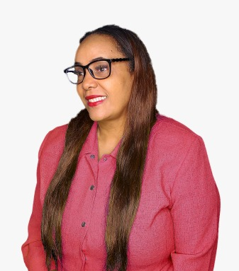

Conozcamos mejor a la Dra Carmen Pereyra
Presentacion
Carmen Pereyra Santos nació en Nagua Provincia Maria Trinidad Sanchez, Republica Dominicana. Sus padres Santiago Pereyra y Lidia Santos es una de 10 hermanos. Su cónyugue es Victor Rafael Angeles Nolasco y tiene dos hijas llamadas Yamarie y Paola Massiel. Cursó sus estudios secundarios en el Colegio Salome Ureña y sus estudios Universitarios en la Universidad Federico Henriquez y Carvajal. Graduada como Doctora en Odontología vive y trabaja cada dia para servir a su familia y comunidad. Dentro de su experiencia Laboral están las de Gerente de Clínica Dental Dra. Carmen Pereyra, Subgerente de SOTECDOM y servidora Pública Servicio Nacional de Salud además de ser la presidenta fundadora de la Fundación Dra. Carmen Pereyra.
